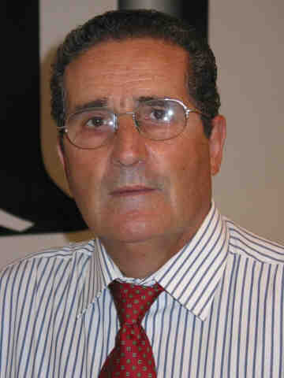
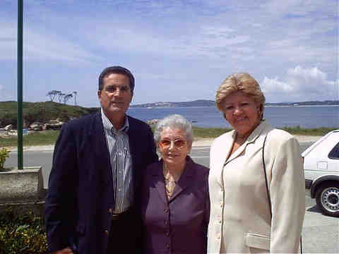
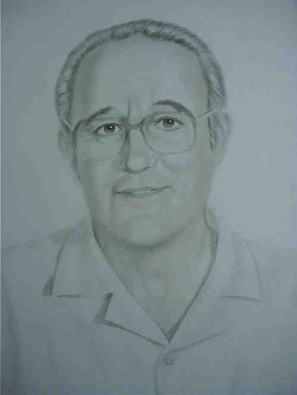
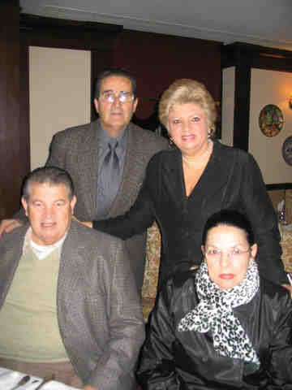
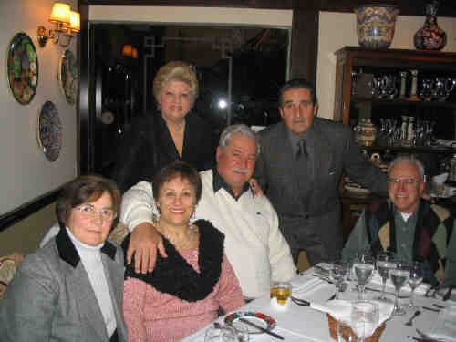
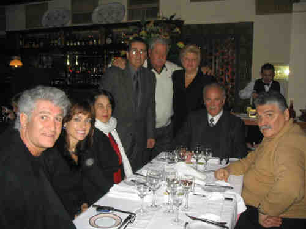

 Arturo Chao Maceiras (1945-) |
Arturo Chao Maceiras
.jpg "Arturo_Ana Maria_Ana Claudia_Ana Cristina e Arturo(Kiko) (506 KB)
(Clique na Foto para vê-la no Tamanho Original)")
• fotos: Arturo_Ana Maria_Ana Claudia_Ana Cristina e Arturo(Kiko).  • fotos: Arturo_Elisa (mãe)_Ana Maria.  • fotos: Arturo_Pai-1.  • fotos: Carlos_Arturo_Ana Maria_Dorita.  • fotos: Creuza_Rosa_Ana Maria_Caetano_Arturo_Oswaldo Luís.  • fotos: Nelsinho_Rosana_Ana_Arturo_Caetano_Ana Maria_Nelson_Florindo. Arturo casad[:o::a] Ana Maria De Macedo, filha de Arnaldo Fernandes De Macedo e Hermenegilda Petrella, em 20 Jul 1973. (Ana Maria De Macedo nasceu em em 29 Jun 1946.) |
 Eventos notáveis em Sua vida foram:
Eventos notáveis em Sua vida foram: